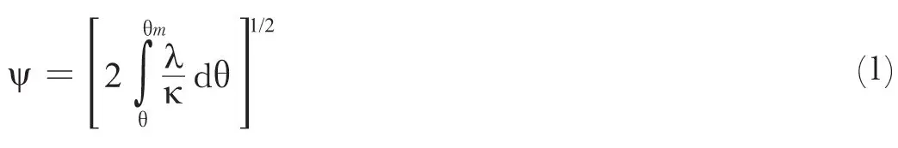
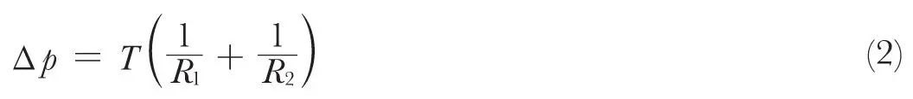
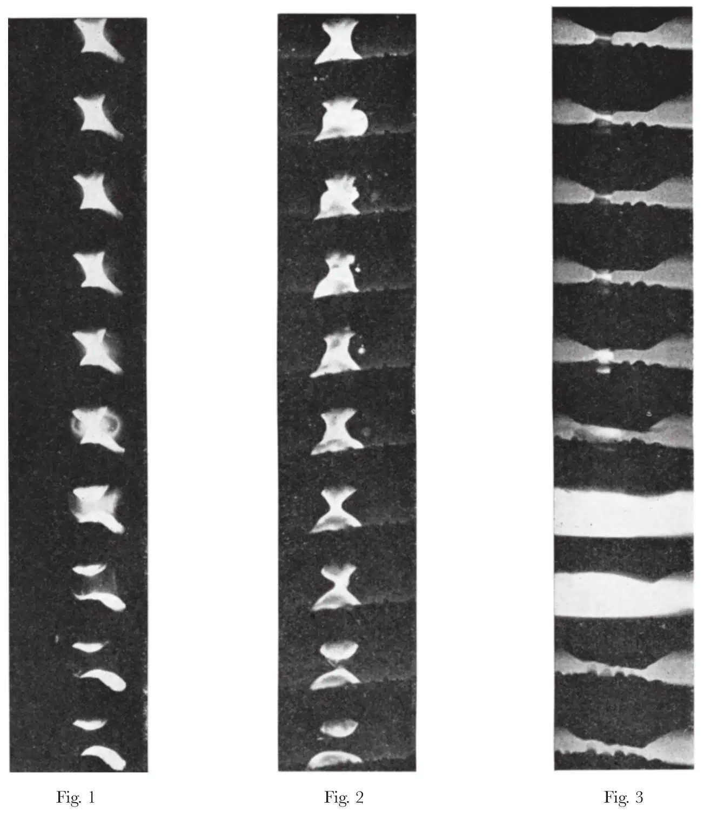

中文
中文F. Llewellyn Jones and M. J. Price
Editor’s Note
The opening of an electrical contact may not appear to hide rich physics. Yet physicist Frank Llewellyn Jones and colleagues here report that the problem is more complex than usually thought. As a closed contact begins to open, the current flowing through it must follow an ever more constricted path. This will necessarily cause great heating, and perhaps even boiling of the metal. Indeed, their simple calculations suggest that small volumes of metal of the order of 10–12 cm3 should be lost upon each opening, eventually damaging the contact. The researchers also show a series of high-speed photographs documenting the formation of tiny bridges of metal between contacts, which are key to understanding the process. 中文
THE processes occurring at the opening of a low-voltage (~4 V) electrical contact have considerable fundamental physical interest as well as having practical importance in the field of electronic and communication engineering. It is well known1 that, starting with the electrodes closely pressed together in the fully closed position, the opening process leads to a constriction of the current stream lines, which can produce intense local heating and melting of the penultimate microscopic region of contact. The maximum temperature in the contact is related to the potential difference by the ψ, θ theorem:

where ψ = a generalized potential equal to the electrical potential in the absence of thermo-electric effects, θ = temperature, λ = thermal conductivity and  = electrical conductivity. Thus, on gradual separation of the electrodes the constriction resistance increases and the temperature rises up to and past the melting-point of the metal. On continuing the withdrawal the molten volume thus increases and gets drawn out into a microscopic bridge of molten metal joining the solid electrodes; the contacts finally separate and the circuit opens only when this bridge is broken. The rupture process, however, can be very complicated and lead to transfer of metal from one electrode to the other, a process which, when continually repeated, can lead to the “pip” and “crater” formation which renders the contacts useless after some time. There is evidence1,2 to show that the matter transferred per operation (~10–12 cm3 in a 5-amp circuit) is related to the size of the molten metal bridge (width ~10–4 cm/amp), so that the stability, growth and final rupture of the bridge are a matter of importance, not only from practical considerations, but also from the point of view of the physical properties of metals in the molten state and at high temperatures. 中文
= electrical conductivity. Thus, on gradual separation of the electrodes the constriction resistance increases and the temperature rises up to and past the melting-point of the metal. On continuing the withdrawal the molten volume thus increases and gets drawn out into a microscopic bridge of molten metal joining the solid electrodes; the contacts finally separate and the circuit opens only when this bridge is broken. The rupture process, however, can be very complicated and lead to transfer of metal from one electrode to the other, a process which, when continually repeated, can lead to the “pip” and “crater” formation which renders the contacts useless after some time. There is evidence1,2 to show that the matter transferred per operation (~10–12 cm3 in a 5-amp circuit) is related to the size of the molten metal bridge (width ~10–4 cm/amp), so that the stability, growth and final rupture of the bridge are a matter of importance, not only from practical considerations, but also from the point of view of the physical properties of metals in the molten state and at high temperatures. 中文
In the first place, an important condition of equilibrium, at least in the earlier stages, is that which depends on the application of surface tension forces. The shapes of the bridges would then be surfaces of revolution satisfying the equation:

and these are unduloids, catenoids or nodoids according as Δp is positive, zero or negative respectively3. Photographs of static microscopic bridges have indeed confirmed that these stable shapes can be attained1. In the later stages of opening Δp will be negative, and experiment has established that the final stable shape is usually the nodoid. The ψ, θ theorem shows that the hottest region of the microscopic molten metal bridge between like electrodes will probably be the narrow neck and, at first sight, it might appear that this is the region at which the bridge is most likely to break. However, detailed investigation of this final process raises some important problems in the physics of metals at high temperatures, and, in particular, near their boiling points. 中文
Mechanisms of Break
It can be seen at once from the ψ, θ theorem that the mechanism of rupture of the molten metal bridge involves the physical properties of the metal, not at any one temperature, but over a wide range of temperatures up to boiling-point, and a number of different processes of rupture are possible. 中文
In the first place, continued separation of the electrodes and the drawing out of the bridge increases the contact resistance Rc; consequently, the contact voltage Vc (=RcIc) for a given circuit current Ic continually rises. Inspection of the ψ, θ theorem shows that the maximum temperature θm correspondingly increases; in fact, it is readily seen by using the Wiedermann-Franz law that, when Vc exceeds about 1.5 V, the corresponding value of θm from (1) exceeds the boiling-point of any known metal. Thus, this process of rise of maximum temperature may well continue until θm reaches the boiling-point θb so breaking the molten metal bridge. The voltage Vb at which this occurs is called the boiling voltage, and is related to θb by equation (1). Further analysis4 of the ψ, θ theorem shows that, since the relationship between ψ and θ depends on the variation of λ/ with θ, thermal instability can occur for certain functional relationships of λ/ with θ, in which case a sudden rise of θm up to the boiling point can, in certain circumstances, take place. Measurements of the contact current, potential difference and maximum temperature, and its location, enable a determination to be made of the transport properties of metals such as their thermal and electrical conductivities and Thomson coefficients and their dependence on temperature to be determined for the molten state at high temperatures1. 中文
These thermal effects, however, are not the only processes which may sever the bridge. For example, the electromagnetic pinch effect might well, with large currents, so constrict the bridge at the narrowest, hottest and therefore weakest point as to rupture it there. Again, the known variation of surface tension with temperature is an important factor influencing the stability of the bridge, and the consequences of this can only be neutralized by the influence of surface impurities or compensating internal viscous motions in the bridge. Restriction due to the size and geometry of the actual electrodes in a given practical contact might well prevent the continued formation of the stable nodoid form, and instability could result. 中文
The shape and volume of the final bridge and its mechanism of rupture are very important from the practical point of view on account of their relation to the rate of matter transfer on rupture. For example, suppose that a thermo-electric effect displaced the hottest section of the molten metal bridge towards one electrode, then it follows that the rupture at that particular section could have the effect of producing net transfer from one electrode to the other. The amount transferred may then only be that of the hottest region in the neck. On the other hand, if, in a different process of rupture, the molten metal bridge disintegrated as a whole and was transferred to one or other electrode (say, by mechanical splashing of minute droplets), then in this case the matter transfer could be relatively high and this, of course, could have serious practical effects. 中文
Thus, the precise processes of the actual opening of the circuit are a matter of considerable practical and theoretical importance, and these phenomena have been under investigation at Swansea for some time. The relationships of the size of the molten metal bridge to the current and to the matter transferred per operation and the local self-inductance have been investigated1,5-10. 中文
Accurate measurement of the amount of metal of a given electrode (~10–12 g) actually transferred on the rupture of the molten metal bridge was found possible using the radioactive tracer technique, and a very rapid variation with local inductance, particularly in the range 10–6 to 10–8 H, was found for a number of metals and, particularly so, for platinum1,6-9. Further, optical examination of the crater formed on bridge rupture indicated that in some metals the whole volume of the molten metal bridge took part in the transfer. The shape and volume of the microscopic bridge were determined from the geometry of the melting isothermals in each electrode after rupture. 中文
Facts such as these are difficult to reconcile with the picture of matter transfer occurring as the result of a mechanical splashing of small droplets formed from the disintegrating molten metal bridge. On the contrary, they are more consistent with the view that the transfer may well be ionic, the motions of the ions being determined by the oscillatory electric field between the electrodes after the bridge has broken. For reasons such as these an alternative view was put forward based on the production of a micro-plasma, possibly initially formed at the broken neck of the molten metal bridge11. Consequently, in recent years effort has been directed to finding direct evidence for the existence of such a plasma. It will be appreciated that, owing to the speed of events in the final stages of the development of the molten metal bridge, extensive expansion of the plasma to a size which can readily be seen may not take place. In fact, particularly in the presence of a high-pressure ambient atmosphere, a plasma of metal vapour might well be severely restricted in size throughout its short life. 中文
Photography of the Microscopic Molten Metal Bridge
Early attempts to photograph the development of the exploding bridge were confined to cases in which it would be expected that surface tension would be the dominant controlling force and large stable bridges obtainable. Such photographs have been previously obtained for large iron bridges in air1. In appropriate circumstances the oxide film on the surface would enable a constant surface tension to be set up over the whole surface, and thus produce stability in accordance with (2). 中文
A number of standard ciné films (25 f.p.s.) were taken of the formation, development and final rupture of the bridge, and many thousands of frames were examined in the hope of finding an illustration of the actual rupture. One or two frames were found which showed that the actual rupture process might not be a simple parting of the nodoid, and this indicated that it was necessary to use high-speed photography if rupture was to be examined in more detail. There were considerable difficulties in the high-speed photography of the molten bridge mainly on account of the small area to be photographed (≤10–4 cm2), the low luminosity for metals other than platinum and tungsten, and the difficulty associated with the synchronization of the camera and the phenomenon to be photographed. A certain degree of elusiveness of the bridge at all stages of its life also made photography difficult. However, an optical system incorporating a high-speed camera was designed and constructed to examine the development of a molten metal bridge for time-intervals down to about 10 μsec. In this way a large number of metals were investigated under varying conditions of ambient atmosphere and pressure. Some preliminary photographs thus obtained were shown at conferences at Oklahoma5, at Graz9 and at Berlin10. Sets of later photographs giving a succession of frames extending over a total time of a few milliseconds covering in some detail various phases of the rupture of the microscopic molten metal bridge are given here. The results for iron are of particular interest in that they illustrate the three different aspects of the rupture process discussed here, and these are given in Figs. 1, 2 and 3. 中文
Fig. 1 shows a series of photographs at a rate of 104 frames per sec and deals with iron in air. Doubtless on account of consequent oxidation affecting the surface tension, well-shaped stable bridges were formed after a number of operations, and these are in accordance with the theoretical prediction of the stable nodoid. Stability could be controlled by surface tension forces, and the fact that the bridge ruptured when the hottest section boiled is clearly indicated by the photographs, which show the two white-hot separate parts of the bridge after rupture. 中文

Fig. 1. Material, iron; atmosphere, air; current, 30 amp; circuit E.M.F., 6 V; polarity, top electrode negative; magnification, ×6; framing rate, 5,000 f.p.s.
Fig. 2. Material, iron; atmosphere, air; current, 30 amp; circuit E.M.F., 6 V; polarity, top electrode negative; magnification, ×6; framing rate, 2,000 f.p.s.
Fig. 3. Material, iron; atmosphere, vacuum; current, 60 amp; circuit E.M.F., 6 V; polarity, top electrode positive; magnification, ×19.5; framing rate, 7,000 f.p.s. 中文
Fig. 2 illustrates a less stable condition in which the degree of oxidation was such that the surface tension could not be maintained constant over the surface. In such cases stability can only be produced by internal viscous motion, and this is consistent with the effect illustrated by the rapid change from frame to frame in the location of the hottest region of the bridge surface. 中文
In order to minimize the effect of surface tension forces in establishing stability, the iron surfaces were cleaned by a glow-discharge treatment in hydrogen and the contact was also operated in a vacuum in order to avoid further oxidation. The development of the bridge in this case is illustrated by the series in Fig. 3. This is dramatically different from the two series in Figs. 1 and 2 in that the molten metal bridge no longer severs over a very small section while the bridge remains in the liquid form. On the contrary, in this case an electric micro-discharge appears to have been formed from the completely exploded bridge, producing a high-density plasma of great brightness the duration of which is less than 100 μsec and probably less than 10 μsec. On account of the inability to expand appreciably in these conditions, the particle density in the micro-plasma must be extremely high. 中文
Similar effects have been found for other metals, and the radio-tracer technique enables the directions of the metallic transfer occurring during this short existence of the plasma to be measured. 中文
We thank Mr. Ieuan Maddock of the Atomic Weapons Research Establishment, U.K. Atomic Energy Authority, Aldermaston, for the loan of a high-speed camera and for advice. One of us (M. J. P.) is also grateful for the award of a Department of Scientific and Industrial Research postgraduate research studentship. Thanks are also due to the Royal Society for a grant for the purchase of precious metals. 中文
(207, 255-257; 1965)
F. Llewellyn Jones and M. J. Price: Department of Physics, University College of Swansea, University of Wales.
References:
1. Llewellyn Jones, F., Physics of Electrical Contacts (Clarendon Press, 1957).
2. Llewellyn Jones, F., Proc. Intern. Res. Symp. Electric Contact Phenomena, University of Maine (1961).
3. Davidson, P. M., Brit. J. App. Phys., 5, 189 (1954).
4. Greenwood, J. A., and Williamson, J. B. P., Proc. Roy. Soc., A, 240, 13 (1958).
5. Llewellyn Jones, F., Proc. Twelfth Intern. Conf. Electromagnetic Relays, Oklahoma State Univ. (1964).
6. Price, M. J., Proc. Thirteenth Intern. Conf. Electromagnetic Relays, Oklahoma State Univ. (1965).
7. Jones, C. R., Hopkins, M. R., and Llewellyn Jones, F., Brit. J. App. Phys., 12, 485 (1961).
8. Jones, C. H., and Hopkins, M. R., Brit. J. App. Phys., 14, 137 (1963).
9. Llewellyn Jones, F., Proc. Intern. Symp. Electrical Contacts, Technische Hochschule, Graz, Austria (1964).
10. Hopkins, M. R., Proc. Intern. Symp. Electrical Contacts, Technische Hochschule, Graz, Austria (1964).
11. Llewellyn Jones, F., Proc. Third Intern. Conf. Ionization Phenomena in Gases, Venice, 2, 620 (1958).
12. Llewellyn Jones, F., Proc. Intern. Conf. Electrical Contacts, Deutsche Akademie der Wissenschaften zu Berlin (1964); also Elektrie, 3, 129 (1965).